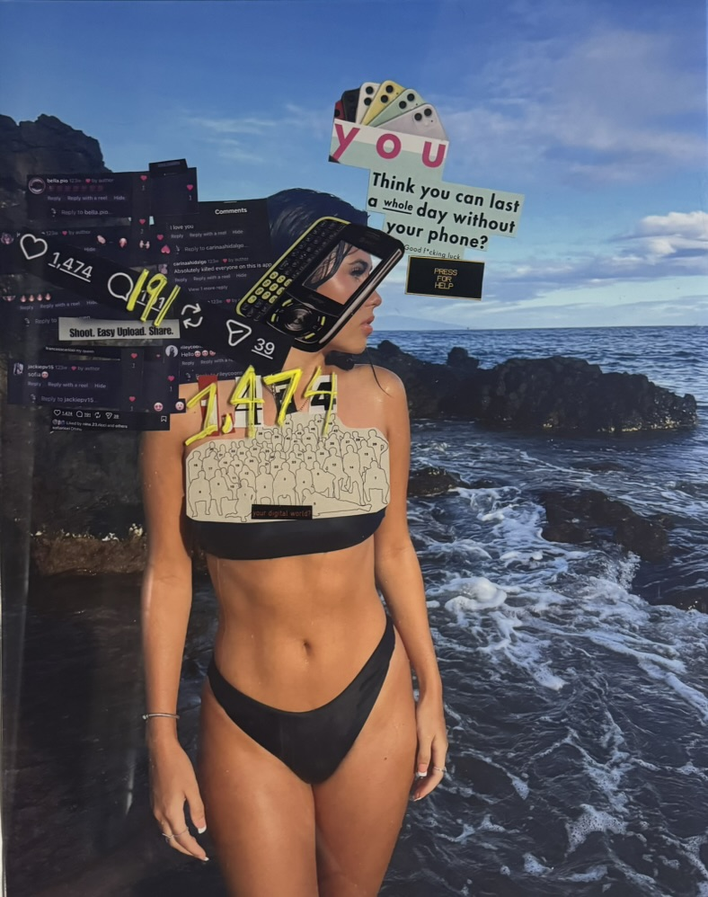
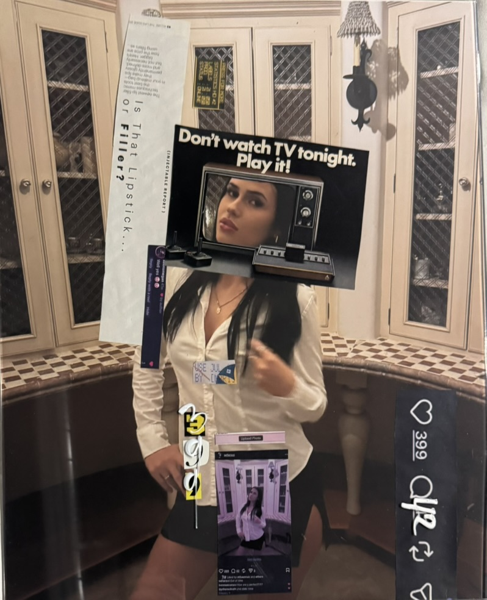
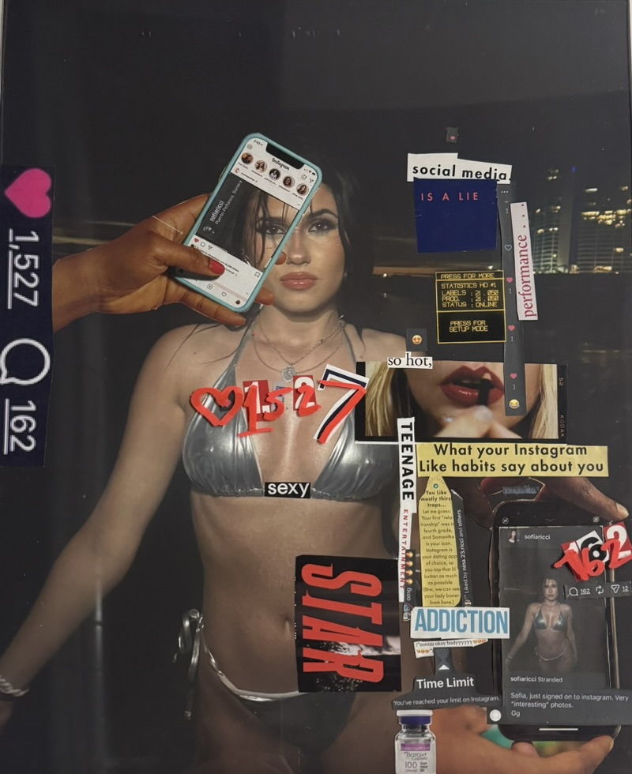
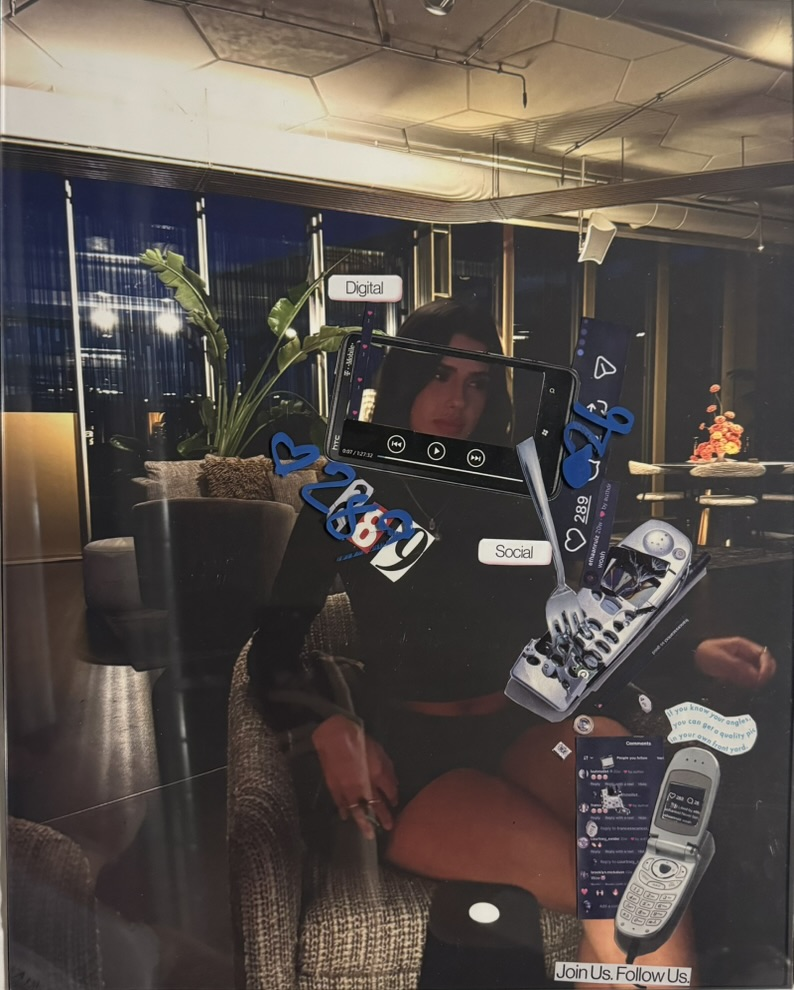
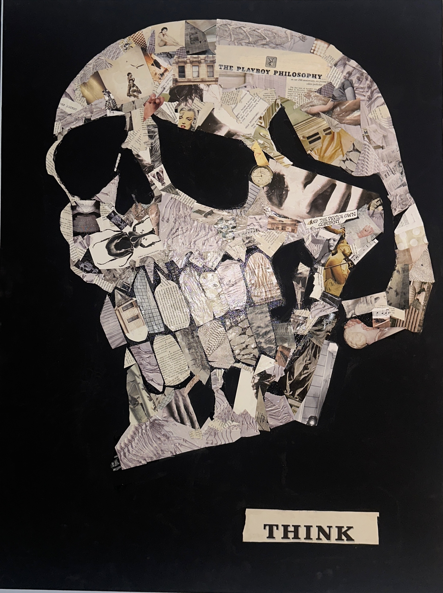
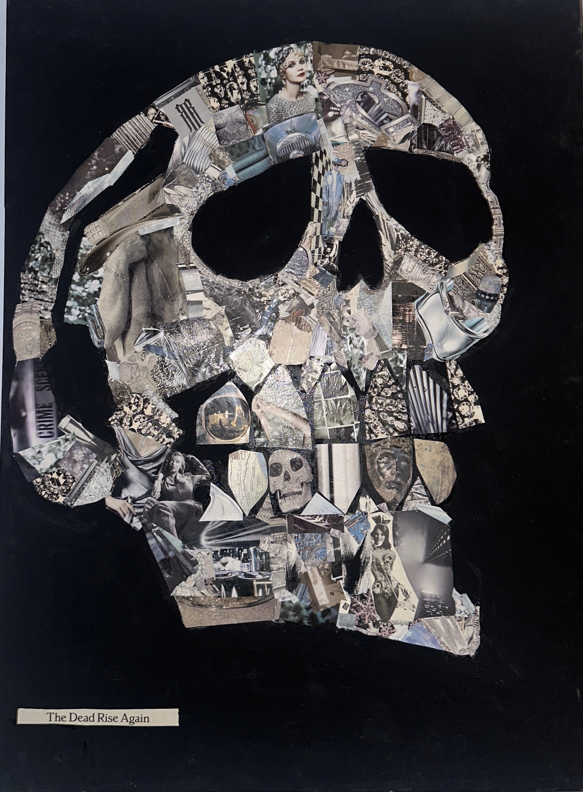
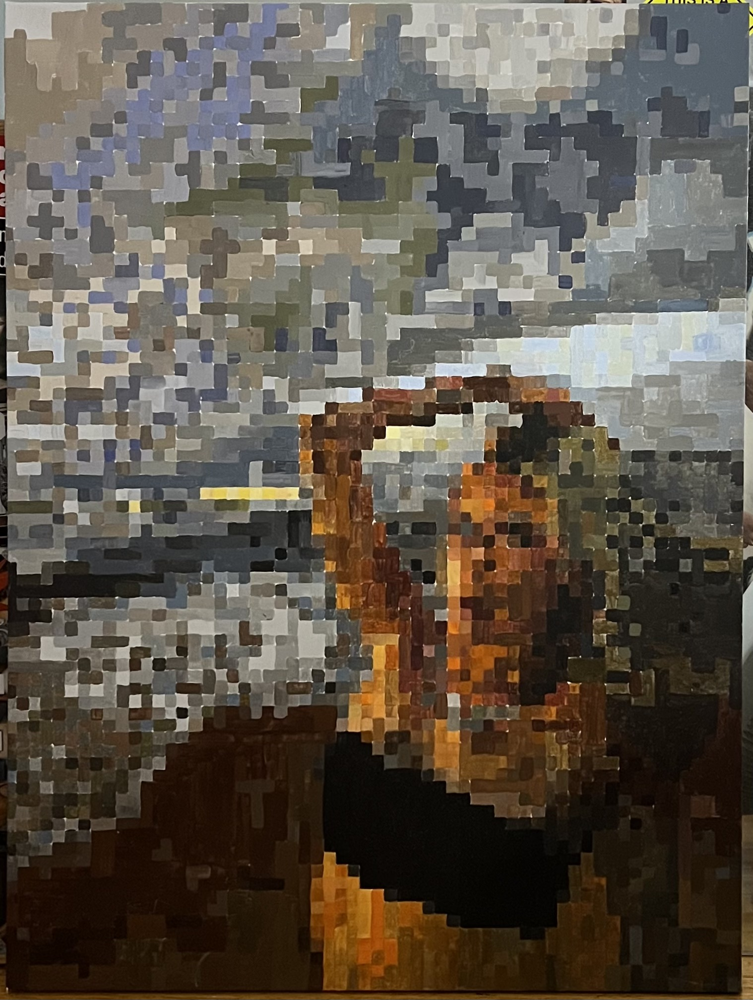
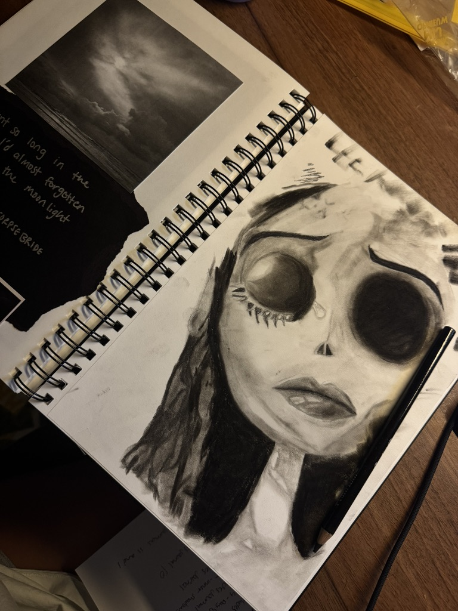
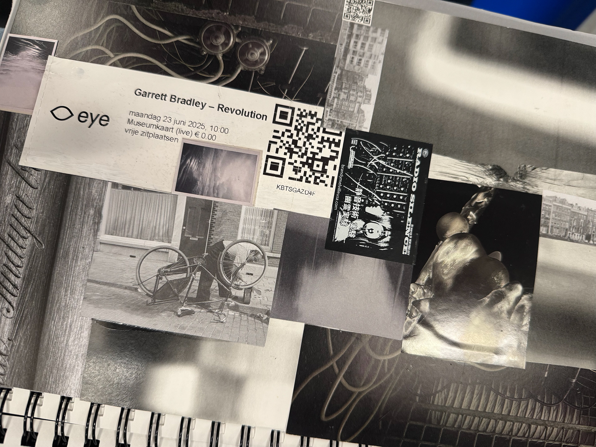
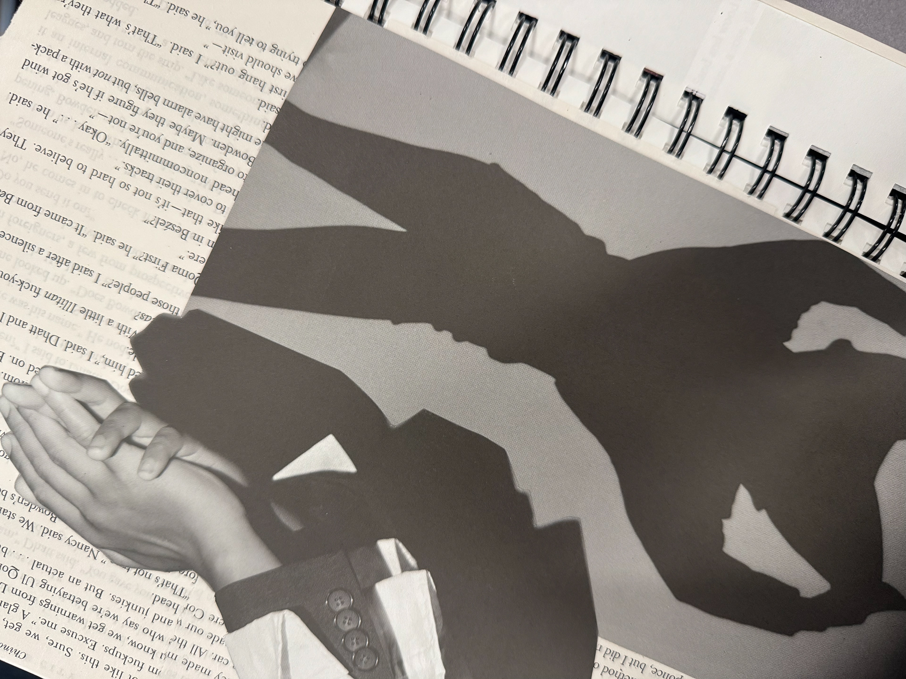

PORTFOLIO




Photo Dump
Exhibited at: YAR, Harry Wood Gallery, Tempe, Arizona January 20th, 2026
Mixed media: archival prints, collage, plexiglass, paint marker.
Each panel 16" x 20" Total installation 36" x 44"
This series of collages reflects on my relationship with Instagram and the ways that social media and digital platforms can shape self-worth. Each image I have posted to my own Instagram account. Using the like count, comments, and direct messages from each post within the collage it showcases how these numbers cause the emotional addiction behind posting on Instagram.
Rebuilding these online posts as physical objects, these images become evidence of a system designed to feel personal but remains very impersonal. Photo Dump sits with the tension between being authentic, performing, and the addiction of wanting to be seen and validated constantly.
Unbroken
December 3rd 2024
Medium: Performance for the Camera / Video Art
Tools/Software: Adobe Premiere Pro
Unbroken is a performance for the camera video piece in which I piece together a shattered wine glass using hot glue. The act of repair represents my personal journey to and within sobriety, along with my attempt to mend the relationships and priorities that alcohol negatively affected. This film, shot in black and white alongside the layered audio of voicemails, cans opening, and broken glass, showcases the strength and fragility of recovering from substance abuse.
For me, the broken glass is representative of moments where I relapsed, the chaos it caused, and moments where I lost control while under the influence. Rebuilding the glass became a metaphor for the work that I do daily to stay sober and find myself again. Even though the wine glass can never be what it once was before the process and effort of putting it back together, it stands for how I am learning to rebuild my life, myself, and my relationships. They will never be one hundred percent the same, but the effort and maintaining sobriety are what matter the most. This project provided me with a means to process some of the darkest and most challenging moments of my life, while also transforming them into a means of healing and helping others.


Think of Death and Think of Life
30" x 40" each
2023-2024
Paranormal, Group Exhibition, Part Crowd Art Gallery (Online), March 1st - 31st 2026

Metaverse
40" x 30"
2024
Figurative, Group Exhibition, Light and Space Time Online Art Gallery, March 1st - 31st 2026

NET
Black and White
Online Exhibition, Fusion Art, February 5th, 2026 - March 4th, 2026
Morning After
Medium: Experimental Short Film
March 5th 2025
Tools/Software: Adobe Premiere Pro, Mixed Media Editing
Morning After explores the anxiety and regret I experienced following nights of heavy drinking during my time using alcohol. Using pieces from nights out, paired with reimagined accounts from concerned family and friends in audio form, the piece portrays the fragmented memories, emotional weight, and vulnerability of waking up with missing information and remorse. By using my raw personal experiences and transforming them into art, I discovered a voice that is both reflective, honest, and, to some extent, relatable. Utilizing composition and overlooked objects helped me craft a narrative that feels intimate and understanding.



Through Darkness and Light
Medium: Journal
July 22nd 2025
Tools: Collage, Charcoal Drawings, Black Light, UV ink
Throughout my two months studying abroad in Amsterdam, I wrote a seven-chapter journal about my experience there called Through Darkness and Light. This journal ended up functioning as both documentation and reflection of my time there, blending academic research, site-specific observations, sketches, found pieces, and creative writing. Each chapter delved into different layers and times throughout my experience in Amsterdam, including its colonial past, struggles with homesickness and sobriety, and the grey areas of identity, all of which I had written about in this journal.
The journal successfully merged my lived experience with critical frameworks, exploring how writing can serve as a media practice in its own right. The journal is not only a record of my time abroad, but I also found it as a method of grounding, inquiry, and storytelling! Its structure reflects the need for adaptation, such as moving between moments of light and darkness, between personal growth and cultural critique.
This work has influenced my broader practice by expanding the role of research and writing in my creative processes. Through crafting this journal, I have discovered a new interest in how personal narrative and cultural history intersect, and how reflection can serve as both artistic material and a conceptual foundation.
Art video or image here
Art statement text here
Art video or image here
Art statement text here